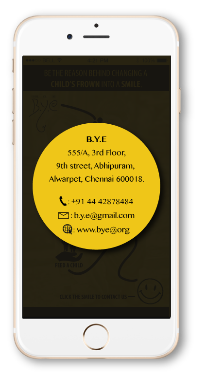

B.Y.E
BEFORE YOU END
B.Y.E is a concept based application that I had designed for a child help organisation, driven by an idea to contribute to the society. It’s a self-initiated project that I designed in 2014.
B.Y.E (Before You End) symbolizes that before we say good-B.Y.E to this world, let’s create a impact in some one’s life. We believe that every child is a blessing. Like every other child, even these underprivileged children deserve a safe shelter, healthy food and an opportunity to be educated. Our motto is to spread unconditional love and joy among various underprivileged children and bring a change to their life and create an impact to their future. Our mission is to help these children become creative, learn life-skills and build self-confidence to create the lives that they truly want to lead. We dream to see a day when no Indian child would be deprived of rights as basic as survival, participation, protection and development.
I used a ‘flat icon’ design theme to create an image that is communicative and easily understandable. The placement of the icons are in a free flowing pattern depicting the journey of changing a child’s frown into a smile. I have used an image of two children happily smiling in the background that justifies the tagline ‘Be the reason behind changing a child’s frown into smile’.

Once the user clicks the option, two black vertical strips gets added in both the corners. I have used an image of a bunch of rural children playing holi (a festival of colors) in the background justifying the tagline ‘Donate now & add color to a child’s life’.

Through this application I am trying to bring people together to change the lives of many underprevilleged children and to spread a big smile on their face. India has 10.12 million child labourers aged between 5 to 14 years. Out of the 400 million children in India, every second child is malnourished.
FEED A CHILD is an initiative that allows the users to help the children of god in two ways. One, 'Feed me food' and the second is 'Feed me knowledge'. This whole idea was evoked from the thought that not everybody will have the money to donate but many surely have the heart to do it. This concept allows the user to donate healthy food for children and to educate them in various fields that will help them create the lives that they truly want to lead.
CONTACT SCREEN
